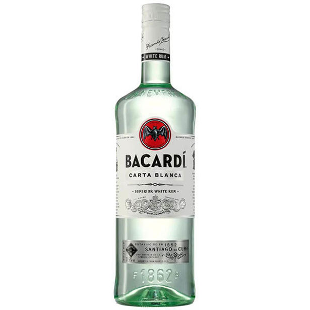
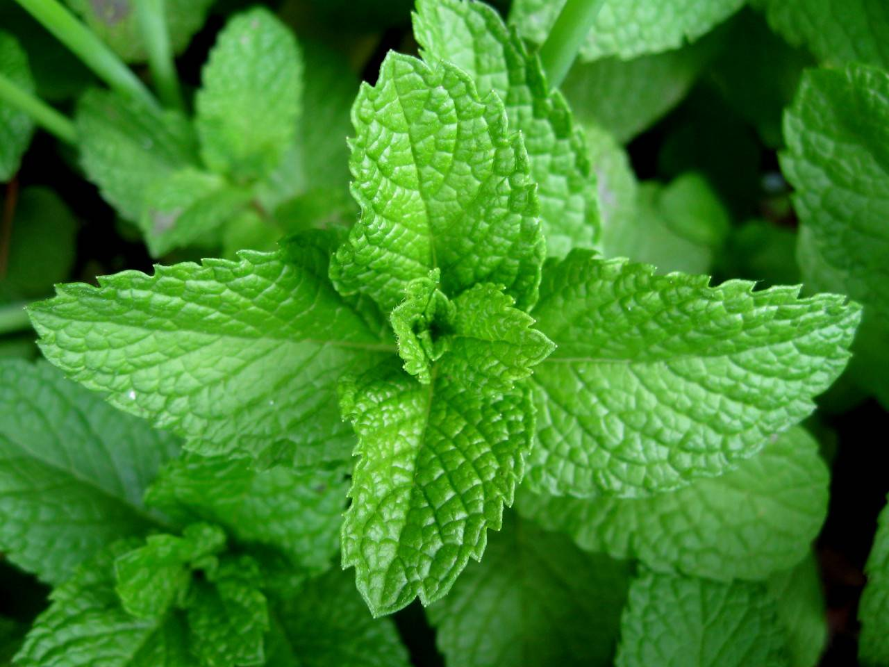
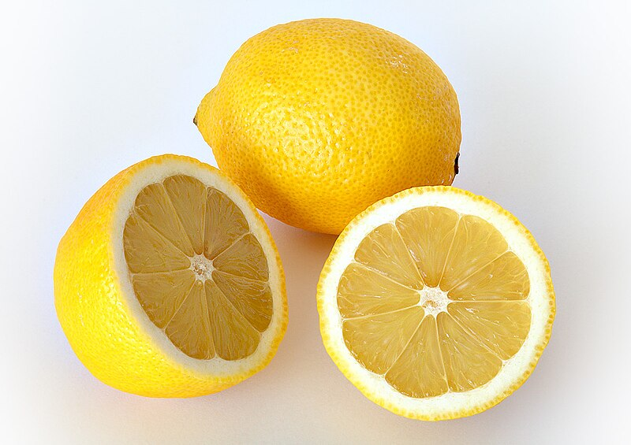

Ingredientes



- 1 cucharada de azúcar
- Jugo de limón
- Hojas de menta fresca
- 1/4 taza Ron Blanco
- Hielo
Preparación
Sigue estos sencillos pasos para preparar el refrescante Mojito:
- En un vaso, mezclar las hojitas de menta con el jugo de limón y el azúcar.
- Agregar el ron junto con los cubos de hielo.
- Echar el agua mineral y revolver
- Decorar con una ramita de menta y una rodaja de limón.
Resultado final